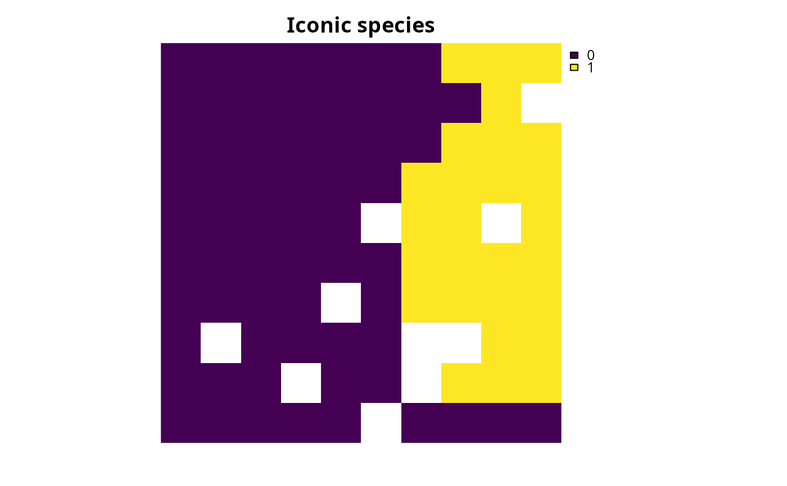
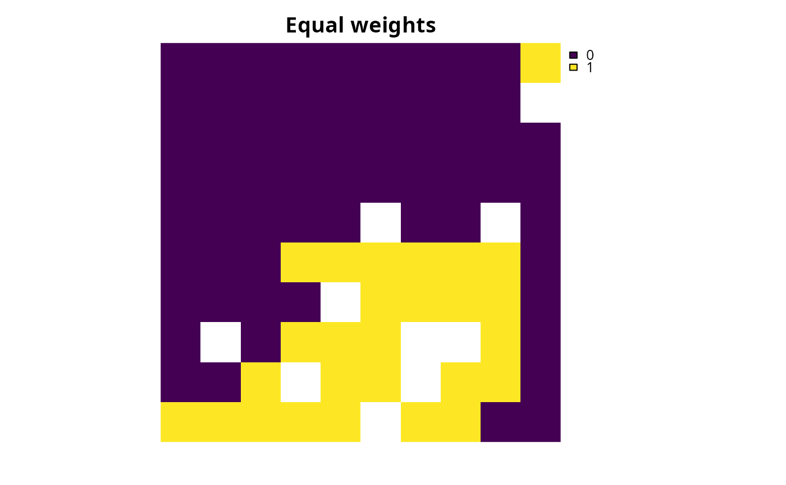
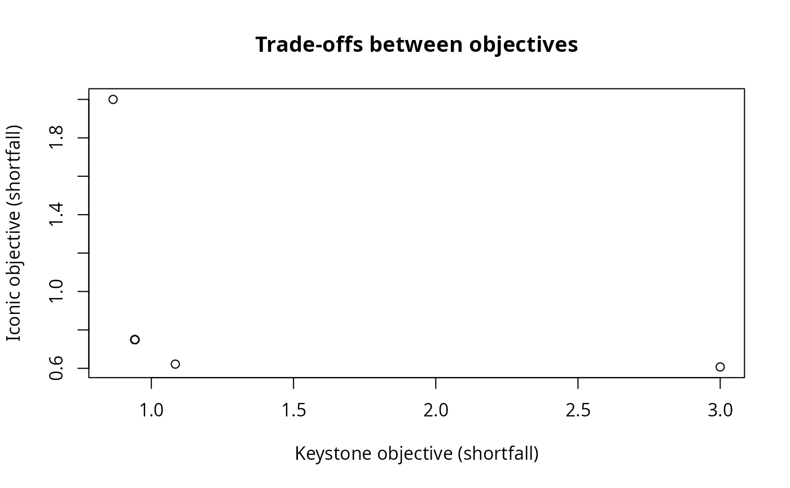

Create weight values for a multi-objective approach
Source:R/approach_weights_matrix.R
approach_weights_matrix.RdCreate multiple sets of weight values to generate multiple solutions with
multi-objective optimization
(e.g., the weights parameter of add_wtd_sum_approach() or
add_ref_point_approach()).
Usage
approach_weights_matrix(
n_problems,
n_values,
include_zeros = TRUE,
include_extremes = TRUE
)Arguments
- n_problems
integervalue denoting the number ofproblem()objects for which to generate values.- n_values
integervalue denoting the number of weight values to to generate for eachproblem()(pern_problems).- include_zeros
logicalvalue indicating if the weight values should include zeros? Ifinclude_zeros = TRUE, then some of the sets will assign a weight of zero to some of the objectives, and so solutions based on these sets will be influenced by only some of the objectives (i.e., those with non-zero weight values). Defaults toTRUE.- include_extremes
logicalvalue indicating if the sets of weight values should combinations of weight values that consider only a single objective? Ifinclude_extremes = TRUE, then some of the sets will contain zeros for all objectives except a single objective. Defaults toTRUE.
Value
A numeric matrix. Here, rows correspond to
different sets of each weight values and columns correspond to different
objectives. Note that the sets of weights values are filtered
to remove sets of weights that - despite having different values -
would result in the same prioritization.
Examples
# in this example, we aim to identify a set of planning units that will
# not exceed a particular budget and meet objectives for
# (i) representing species that are important for ecosystem
# functioning (hereafter, keystone species) and (ii) representing species
# that have high social or cultural value (hereafter, iconic species)
# import data
con_cost <- get_sim_pu_raster()
keystone_spp <- get_sim_features()[[1:3]]
iconic_spp <- get_sim_features()[[4:5]]
# define a total conservation budget (30% of total cost)
budget <- terra::global(con_cost, "sum", na.rm = TRUE)[[1]] * 0.3
# define a single-objective problem for the keystone species objective
p1 <-
problem(con_cost, keystone_spp) %>%
add_min_shortfall_objective(budget) %>%
add_relative_targets(0.4) %>%
add_binary_decisions()
# define a single-objective problem for the iconic species objective
p2 <-
problem(con_cost, iconic_spp) %>%
add_min_shortfall_objective(budget) %>%
add_relative_targets(0.45) %>%
add_binary_decisions()
# solve the single-objective problems
s1 <-
p1 %>%
add_default_solver(verbose = FALSE) %>%
solve()
s2 <-
p2 %>%
add_default_solver(verbose = FALSE) %>%
solve()
# plot the solutions to the single-objective problems
plot(s1, main = "Keystone species", axes = FALSE)
 plot(s2, main = "Iconic species", axes = FALSE)
plot(s2, main = "Iconic species", axes = FALSE)

# now create multi-objective problem with equal weights for the objectives
mp1 <-
multi_problem(keystone_obj = p1, iconic_obj = p2) %>%
add_wtd_sum_approach(c(0.5, 0.5), verbose = TRUE) %>%
add_default_solver(verbose = FALSE)
# solve problem
ms1 <- solve(mp1)
# plot solution to multi-objective problem
plot(ms1, main = "Equal weights", axes = FALSE)

# we will now generate multiple solutions based on a matrix
# that contains different combinations of weight values
# create a matrix with weight values for objectives
weights_matrix <- approach_weights_matrix(
n_problems = 2, n_values = 5, include_zero = TRUE
)
# print weight matrix
print(weights_matrix)
#> [,1] [,2]
#> [1,] 1.00 1.00
#> [2,] 1.00 0.00
#> [3,] 0.00 1.00
#> [4,] 0.50 0.25
#> [5,] 0.75 0.25
#> [6,] 1.00 0.25
#> [7,] 0.25 0.50
#> [8,] 0.75 0.50
#> [9,] 1.00 0.50
#> [10,] 0.25 0.75
#> [11,] 0.50 0.75
#> [12,] 1.00 0.75
#> [13,] 0.25 1.00
#> [14,] 0.50 1.00
#> [15,] 0.75 1.00
# create multi-objective problem using weight matrix
mp2 <-
multi_problem(keystone_obj = p1, iconic_obj = p2) %>%
add_wtd_sum_approach(weights_matrix, verbose = TRUE) %>%
add_default_solver(gap = 0.01, verbose = FALSE)
# solve multi-objective problem and remove duplicate solutions
ms2 <- solve(mp2, remove_duplicates = TRUE)
#> Generating solutions ■■■■■■■ | 3/15 | 20% | ETA: 5s
#> Generating solutions ■■■■■■■■■■■■■■■■■■■■■ | 10/15 | 67% | ETA: 2s
#> Generating solutions ■■■■■■■■■■■■■■■■■■■■■■■■■■■■■■■ | 15/15 | 100% | ETA: 0s
#> ℹ Found 13 out of the requested 15 non-duplicate solutions.
# plot multiple solutions
plot(terra::rast(ms2), axes = FALSE)
 # extract objective values for the solutions
obj_matrix <- attributes(ms2)$objective
# print the objective values
print(obj_matrix)
#> keystone_obj iconic_obj
#> solution_1 0.9059099 0.7111356
#> solution_2 0.8567573 2.0000000
#> solution_3 3.0000000 0.6057715
#> solution_4 0.8949350 0.7202442
#> solution_5 0.8893569 0.7320958
#> solution_6 0.8893569 0.7320958
#> solution_7 1.0348682 0.6327522
#> solution_8 0.8949350 0.7202442
#> solution_9 1.0801232 0.6129796
#> solution_10 0.9616594 0.6677060
#> solution_11 1.0799882 0.6111864
#> solution_12 1.0348183 0.6323333
#> solution_13 0.9616594 0.6677060
# plot the objectives values to visualize trade-offs
# (note that smaller values are better because these objectives seek to
# minimize representation shortfalls)
plot(
obj_matrix,
main = "Trade-offs between objectives",
xlab = "Keystone objective (shortfall)",
ylab = "Iconic objective (shortfall)"
)
# extract objective values for the solutions
obj_matrix <- attributes(ms2)$objective
# print the objective values
print(obj_matrix)
#> keystone_obj iconic_obj
#> solution_1 0.9059099 0.7111356
#> solution_2 0.8567573 2.0000000
#> solution_3 3.0000000 0.6057715
#> solution_4 0.8949350 0.7202442
#> solution_5 0.8893569 0.7320958
#> solution_6 0.8893569 0.7320958
#> solution_7 1.0348682 0.6327522
#> solution_8 0.8949350 0.7202442
#> solution_9 1.0801232 0.6129796
#> solution_10 0.9616594 0.6677060
#> solution_11 1.0799882 0.6111864
#> solution_12 1.0348183 0.6323333
#> solution_13 0.9616594 0.6677060
# plot the objectives values to visualize trade-offs
# (note that smaller values are better because these objectives seek to
# minimize representation shortfalls)
plot(
obj_matrix,
main = "Trade-offs between objectives",
xlab = "Keystone objective (shortfall)",
ylab = "Iconic objective (shortfall)"
)

# we can see that there are multiple solutions (points) that have
# exactly the same performance for the two objectives (these appear
# as points with slightly thicker borders), and this is a key limitation
# of the weighted sum approach